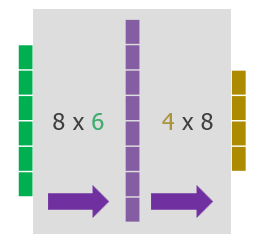
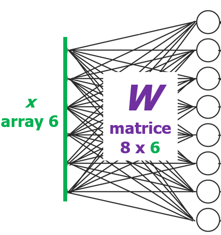
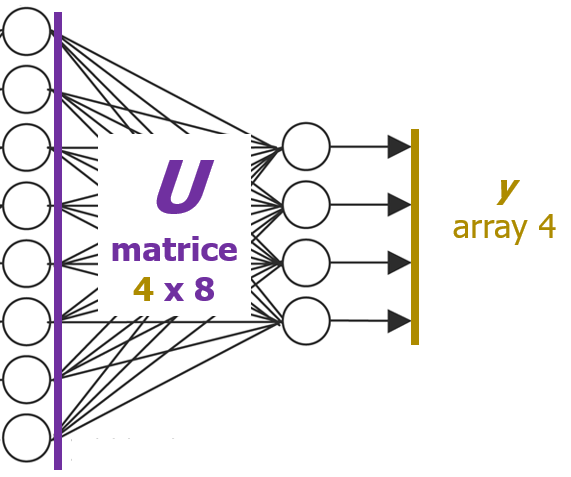

Array (Vettori) e Matrici
Tipi di dato
Un calzino, una scarpa, una banana sono oggetti di tipo diverso. Ognuno di noi lo capisce intuitivamente quando pensa ad uno di questi oggetti.
E' fondamentale acquisire la stessa capacità per gli "oggetti astratti", come quelli che si usano in matematica. Qui sotto i tipi che ci servono
Vettore (Array)
Cosa è
Sequenza di numeri (elementi).
- Nella notazione scritta ci sono convenzioni per differenziare un array da un numero. Ad esempio, $\mathbf{a}$, $\underline{a}$, $\vec{a}$ sono modi diversi per indicare un array; $a_k$, $a[k]$ sono modi diversi per elencare il $k$-esimo elemento dell'array.
- Queste convenzioni spesso si danno per scontate senza renderle esplicite. Occorre capirle dal contesto.
- La notazione $\mathbf{a} \in \mathbb{R}^n$ significa che il vettore $\mathbf{a}$ ha $n$ elementi, è cioè di dimensione $n$. Spesso la dimensione di un array non è scritta esplicitamente e deve essere dedotta dal contesto.
Cosa rappresenta per noi
Consideriamo un array $\mathbf{a}$ con $n$ elementi.
Può rappresentare:
- Punto in uno spazio a $n$ dimensioni (o il vettore che unisce l'origine con quel punto).
- Input di una istanza di un problema in cui ci sono $n$ numeri di input.
- Input di un modello in cui entra un array con $n$ elementi
- Output di una istanza/modello, come sopra.
Matrice
Cosa è
Griglia rettangolare di numeri (elementi).
- Nella notazione scritta la convenzione più comune è questa: $\mathbf{A}$.
- L'elemento di riga $r$ e colonna $c$ si indica con $a_{r,c}$ oppure $a[r,c]$. Notare che è in minuscolo, prima l'indice di riga e poi l'indice di colonna.
- Spesso il numero di righe e di colonne non è scritto esplicitamente. Occorre capire anche questo dal contesto.
Cosa rappresenta per noi
Consideriamo una matrice $\mathbf{A}$ con $r$ righe e $c$ colonne.
- Un dataset composto da $r$ istanze già risolte di un problema. Ogni riga rappresenta un'istanza; le "prime" colonne sono l'input, le restanti colonne sono l'output. Il numero di colonne di input ed il numero di colonne di output è lo stesso in tutte le istanze.
- I pesi di una parte di una rete neurale, in cui entra un array con $c$ elementi ed esce un array con $r$ elementi (per memorizzare: "la dimensione di uscita è il numero di righe").
Dopo avere visto il Prodotto matrice vettore più sotto, si può capire che $\mathbf{A}$ può rappresentare anche:
- Una trasformazione lineare dallo spazio con $c$ dimensioni allo spazio con $r$ dimensioni. Ogni punto dello spazio a $r$ dimensioni è cioè "mappato" su un punto dello spazio a $c$ dimensioni. In dettaglio, il punto di partenza $\mathbf{v_{IN}}$ è "mappato" sul punto di arrivo $\mathbf{v_{OUT}}=\mathbf{A}\mathbf{v_{IN}}$ in questo modo: la prima coordinata di $\mathbf{v_{OUT}}$ è una combinazione lineare di tutte le coordinate di $\mathbf{v_{IN}}$, in cui i coefficienti sono i numeri nella prima riga della matrice. La seconda coordinata di di $\mathbf{v_{OUT}}$...numeri nella seconda riga della matrice, e così via.
- Caso particolare del precedente. Per i punti nello spazio di partenza con coordinate one-hot (una coordinata 1, tutte le altre 0), il punto di arrivo è una colonna della matrice. La prima colonna è il punto di arrivo del punto di partenza con prima coordinata 1; la seconda colonna è il punto di arrivo del punto di partenza con seconda coordinata 1; e così via. Basta notare che se si moltiplica un vettore one-hot una matrice, il risultato è la colonna della matrice che "corrisponde all'1 nel vettore".
Operazioni
L'operazione somma tra numeri reali produce un numero reale. L'operazione somma tra un numero ed un insieme di numeri non ha senso (semplifico molto). In ogni operazione è indispensable capire il tipo degli oggetti che entrano ed il tipo dell'oggetto che esce. Qui sotto le operazioni che ci servono.
Prodotto Vettore Riga-Vettore
Un vettore è di norma considerato "una colonna". In alcuni contesti può essere considerato "una riga". La notazione con cui si indica un vettore riga fa riferimento al termine "trasposto": $\mathbf{a}$ è un vettore colonna, $\mathbf{a}^T$ è lo stesso vettore considerato come riga.
- Entra: Array riga $v^T$ ed array $w$ con lo stesso numero di elementi.
- Esce: Numero
- Cosa calcola: combinazione lineare degli elementi dell'array (colonna) dove i pesi sono gli elementi dell'array riga.
$$ \mathbf{v}^\top \mathbf{w} = v_1 w_1 + v_2 w_2 + \cdots + v_n w_n = \sum_{k=1}^{n} v_k w_k $$
Prodotto Matrice-Vettore
- Entra: Matrice $\mathbf{A}$ con $r$ righe e $c$ colonne, Array $\mathbf{v}$ di dimensione $c$.
- Esce: Array di dimensione $r$.
- Cosa calcola: l'operazione precedente ripetuta per ogni riga della matrice. Cioè, il primo elemento dell'array risultato è la combinazione lineare degli elementi di $\mathbf{v}$dove i pesi sono gli elementi della prima riga di $\mathbf{A}$; il secondo elemento...della seconda riga della matrice; e così via.
$$ \mathbf{A}\mathbf{v} = \begin{pmatrix} a_{11} & a_{12} & \cdots & a_{1c} \\ a_{21} & a_{22} & \cdots & a_{2c} \\ \vdots & \vdots & \ddots & \vdots \\ a_{r1} & a_{r2} & \cdots & a_{rc} \end{pmatrix} \begin{pmatrix} v_1 \\ v_2 \\ \vdots \\ v_c \end{pmatrix} = $$
$$ \begin{pmatrix} a_{11} v_1 + a_{12} v_2 + \cdots + a_{1c} v_c \\ a_{21} v_1 + a_{22} v_2 + \cdots + a_{2c} v_c \\ \vdots \\ a_{r1} v_1 + a_{r2} v_2 + \cdots + a_{rc} v_c \end{pmatrix} = \begin{pmatrix} \sum_{k=1}^{c} a_{1k} v_k \\ \sum_{k=1}^{c} a_{2k} v_k \\ \vdots \\ \sum_{k=1}^{c} a_{rk} v_k \end{pmatrix} $$
Caso particolare: vettore one-hot. Il punto di arrivo del punto di partenza con la sola $j$-esima coordinata che vale 1 è la $j$-esima colonna della matrice.
$$ \mathbf{A}\mathbf{v} = \begin{pmatrix} a_{11} & a_{12} & \cdots & a_{1c} \\ a_{21} & a_{22} & \cdots & a_{2c} \\ \vdots & \vdots & \ddots & \vdots \\ a_{r1} & a_{r2} & \cdots & a_{rc} \end{pmatrix} \begin{pmatrix} 0 \\ \vdots \\ 1 \\ \vdots \\ 0 \end{pmatrix} \leftarrow j $$
$$ \begin{pmatrix} a_{11} \cdot 0 + \cdots + a_{1j} \cdot 1 + \cdots + a_{1c} \cdot 0 \\ a_{21} \cdot 0 + \cdots + a_{2j} \cdot 1 + \cdots + a_{2c} \cdot 0 \\ \vdots \\ a_{r1} \cdot 0 + \cdots + a_{rj} \cdot 1 + \cdots + a_{rc} \cdot 0 \end{pmatrix} = \begin{pmatrix} a_{1j} \\ a_{2j} \\ \vdots \\ a_{rj} \end{pmatrix} $$
Prodotto Scalare
- Entra: Array $\mathbf{v}$ ed array $\mathbf{w}$ con lo stesso numero di elementi.
- Esce: Numero.
- Cosa calcola (definizione informale, intuitiva, non del tutto accurata): la lunghezza di $\mathbf{v}$ proiettato su $\mathbf{w}$, moltiplicata per la lunghezza di $\mathbf{w}$; il risultato è: positivo se i due array puntano nella stessa direzione; negativo se puntano in direzioni opposte; zero se sono perpendicolari tra loro.
$$ \langle \mathbf{v}, \mathbf{w} \rangle = \mathbf{v}^\top \mathbf{w} = v_1 w_1 + v_2 w_2 + \cdots + v_n w_n = \sum_{k=1}^{n} v_k w_k $$
Esempio: rete neurale
Intuizione
Consideriamo una rete neurale feed-forward. Primo strato definito dalla matrice $\mathbf{W}$ con 8 righe e 6 colonne, secondo strato definito dalla matrice $\mathbf{U}$ con 4 righe e 8 colonne. Funzione di attivazione dei neuroni indicata con $\sigma(\ldots)$.

Il calcolo effettuato dalla rete neurale si può scrivere in maniera molto sintetica: $\sigma(\mathbf{U}\, \sigma(\mathbf{W}\mathbf{x}))$.
Cosa accade, intuitivamente:
- Al vettore di input $\mathbf{x}$ viene applicata una trasformazione non lineare $\sigma(\mathbf{W}(\ldots))$, definita dai pesi della matrice $\mathbf{W}$ e dalla funzione di attivazione dei neuroni.
- Al vettore così ottenuto viene applicata un'altra trasformazione non lineare $\sigma(\mathbf{U}(\ldots))$, definita dai pesi della matrice $\mathbf{U}$ e dalla funzione di attivazione dei neuroni.
Altro punto di vista intuitivo:
- Il punto di input $\mathbf{x}$ è mappato in modo non lineare in uno spazio con un numero di dimensioni uguale al numero di righe di $\mathbf{W}$.
- Il punto così ottenuto è mappato in modo non lineare in uno spazio con con un numero di dimensioni uguale al numero di righe di $\mathbf{U}$.
Spiegazione

La riga 1 di $\mathbf{W}$ contiene i pesi con cui il vettore $\mathbf{x}$ di input arriva all'ingresso del neurone 1; la riga 2 contiene i pesi con cui il vettore di input arriva all'ingresso del neurone 2, e così via. L'ingresso dei neuroni è quindi il seguente:
$$ \mathbf{W}\mathbf{x} = \begin{pmatrix} w_{11} & w_{12} & \cdots & w_{18} \\ w_{21} & w_{22} & \cdots & w_{28} \\ \vdots & \vdots & \ddots & \vdots \\ w_{61} & w_{62} & \cdots & w_{68} \end{pmatrix} \begin{pmatrix} x_1 \\ x_2 \\ \vdots \\ x_8 \end{pmatrix} = \begin{pmatrix} \sum_{k=1}^{8} w_{1k} x_k \\ \sum_{k=1}^{8} w_{2k} x_k \\ \vdots \\ \sum_{k=1}^{8} w_{6k} x_k \end{pmatrix} \in \mathbb{R}^6 $$
Ogni neurone applica una funzione lineare (la stessa per ogni neurone) che indichiamo con $\sigma(\ldots)$. L'uscita dei neuroni sarà quindi:
$$ \begin{pmatrix} \sigma\left(\sum_{k=1}^{8} w_{1k} x_k\right) \\ \sigma\left(\sum_{k=1}^{8} w_{2k} x_k\right) \\ \vdots \\ \sigma\left(\sum_{k=1}^{8} w_{6k} x_k\right) \end{pmatrix} = \sigma(\mathbf{W}\mathbf{x}) $$
Lo step successivo è analogo, con pesi diversi:

La riga 1 di $\mathbf{U}$ contiene i pesi con cui il vettore prodotto dai neuroni sulla sinistra (cioè $\sigma(\mathbf{W}\mathbf{x})$) arriva all'ingresso del neurone 1 sulla destra; la riga 2 contiene i pesi con cui il vettore prodotto dai neuroni sulla sinistra arriva all'ingresso del neurone 2 sulla destra, e così via. L'ingresso dei neuroni dello strato finale sarà quindi:
$$ \mathbf{U}\, \sigma(\mathbf{W}\mathbf{x}) = \begin{pmatrix} u_{11} & u_{12} & \cdots & u_{16} \\ u_{21} & u_{22} & \cdots & u_{26} \\ u_{31} & u_{32} & \cdots & u_{36} \\ u_{41} & u_{42} & \cdots & u_{46} \end{pmatrix} \begin{pmatrix} \sigma\left(\sum_{k=1}^{8} w_{1k} x_k\right) \\ \sigma\left(\sum_{k=1}^{8} w_{2k} x_k\right) \\ \vdots \\ \sigma\left(\sum_{k=1}^{8} w_{6k} x_k\right) \end{pmatrix} \in \mathbb{R}^4 $$
Se chiamiamo $\mathbf{z}$ l'uscita dei neuroni del primo strato (cioè $\sigma(\mathbf{W}\mathbf{x})$) allora la formula è più semplice da comprendere. Questo è l'ingresso dei neuroni dello strato finale:
$$ \mathbf{U}\, \mathbf{z} = \begin{pmatrix} u_{11} & u_{12} & \cdots & u_{16} \\ u_{21} & u_{22} & \cdots & u_{26} \\ u_{31} & u_{32} & \cdots & u_{36} \\ u_{41} & u_{42} & \cdots & u_{46} \end{pmatrix} \begin{pmatrix} z_1 \\ z_2 \\ \vdots \\ z_6 \end{pmatrix} = \begin{pmatrix} \sum_{k=1}^{6} u_{1k} z_k \\ \sum_{k=1}^{6} u_{2k} z_k \\ \sum_{k=1}^{6} u_{3k} z_k \\ \sum_{k=1}^{6} u_{4k} z_k \end{pmatrix} \in \mathbb{R}^4 $$
e questa è l'uscita dello strato finale:
$$ \sigma(\mathbf{U}\, \mathbf{z}) = \sigma\left( \begin{pmatrix} u_{11} & u_{12} & \cdots & u_{16} \\ u_{21} & u_{22} & \cdots & u_{26} \\ u_{31} & u_{32} & \cdots & u_{36} \\ u_{41} & u_{42} & \cdots & u_{46} \end{pmatrix} \begin{pmatrix} z_1 \\ z_2 \\ \vdots \\ z_6 \end{pmatrix} \right) \in \mathbb{R}^4 $$